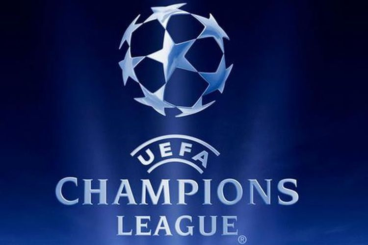
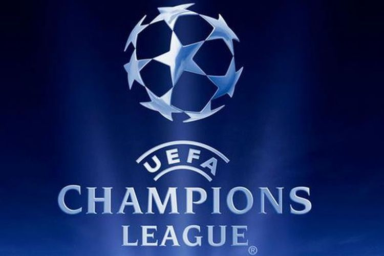

Финал Лиги Чемпионов 2020/2021
 

Мы прорывались к этому моменту сквозь изнурительный "пандемический" сезон достаточно долго, однако этот путь должен был рано или поздно завершиться, поэтому на поле португальского стадиона Драгау нас ожидал главный матч уходящего футбольного года — финал Лиги чемпионов УЕФА. На сей раз, исключительно английский финал — Манчестер Сити выступал в качестве номинальных хозяев в игре против лондонского Челси. Долгое время "горожанам" не покорялся даже полуфинальный раунд данного состязания, но именно в этом тяжелом году им удалось переступить, в первую очередь, через себя, и наконец-то ворваться в решающий поединок в битве за трофей. Дорога была не из самых простых — на первых раундах плей-офф пришлось перешагивать через обе немецкие Боруссии (4:0 и 4:2 в играх против Менхенгладбаха и Дортмунда соответственно), а вот потом был уже финалист прошлого розыгрыша — французский Пари Сен-Жермен. С боем, но коллектив Хосепа Гвардиолы свою задачу выполнил (4:1). Но ведь и оступались, наверняка, "небесно-голубые" — спросите вы. Да, бывало и такое. И тут главный символизм этого вечера. Лишь португальский Порту на своей домашней арене сумел обыграть Манчестер Сити в текущей еврокубковой кампании. Соперники по финалу прекрасно об этом знали, поэтому психологический козырь в рукаве у них также имелся. А что же сам Челси? Лондонский клуб, также, как и соперники, проиграли лишь однажды. Удивительно, но все тот же Порту стал на их пути в выездном для "драконов" четвертьфинале (0:1), после чего "синие" стартовали полуфинальную стадию с ничейного результата в Мадриде против Реала (1:1), однако ответный матч против "галактикос" подопечные Томаса Тухеля провели настолько уверенно, что ни у кого не возникло сомнений — именно "пенсионеры" в этом году достойны попасть в финал.